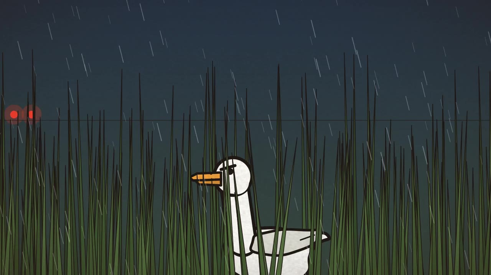
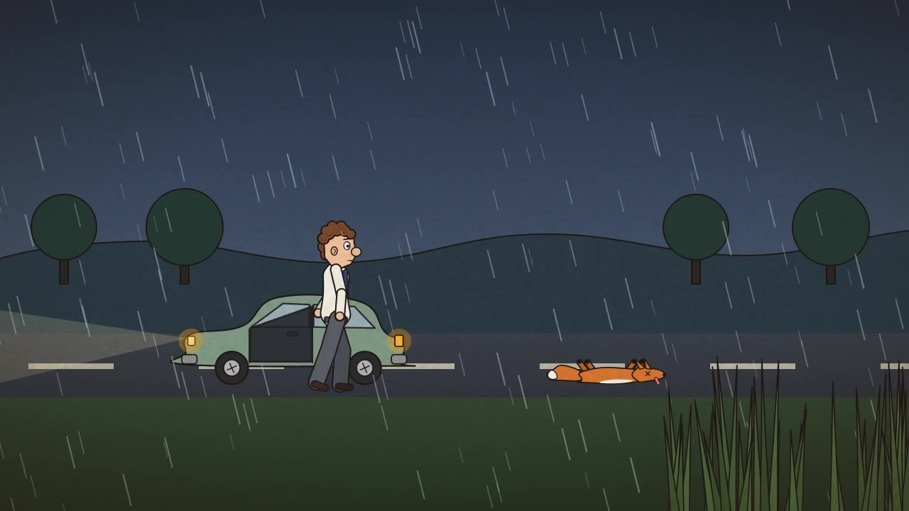
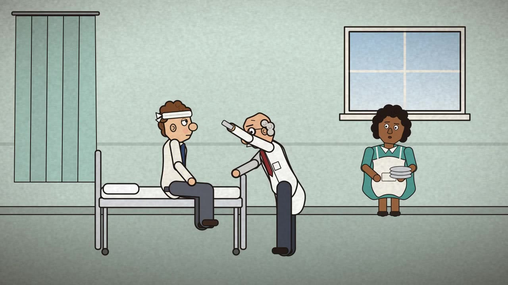
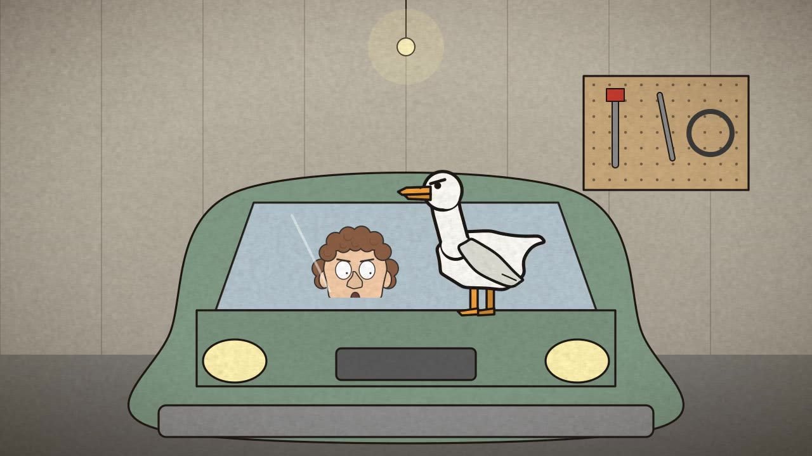
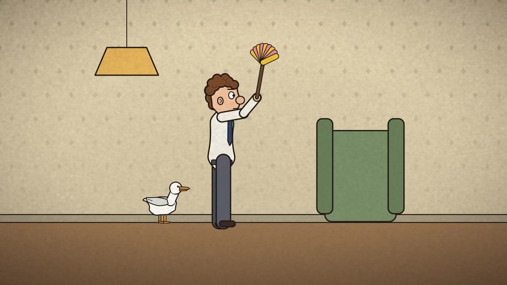
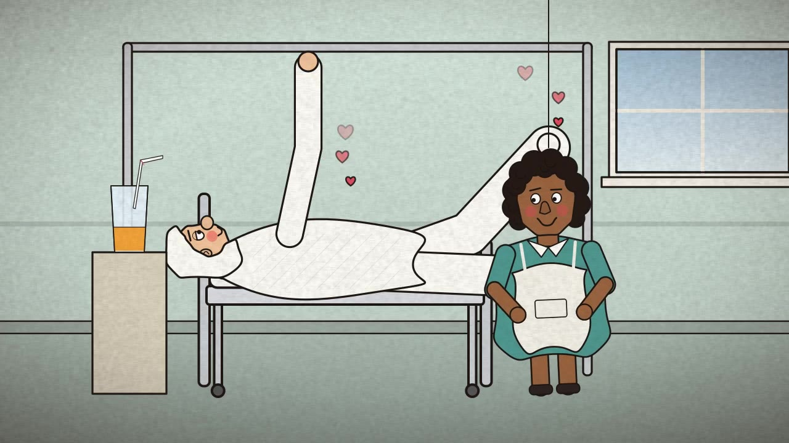
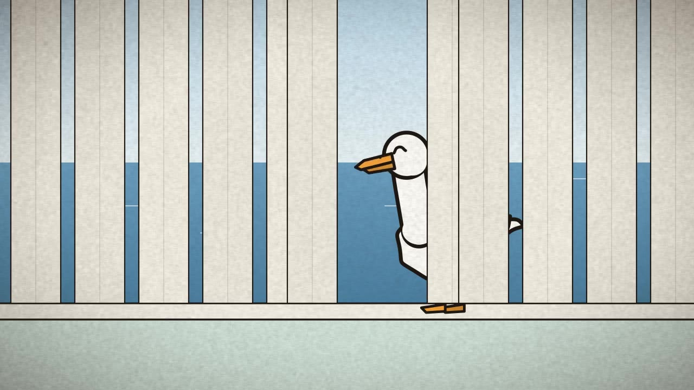

DUCK
The story
On the night the balloon factory goes bust, Colin drives home in the rain with his desk in a box, and runs over a fox. A duck in the long grass sees it all. At home a letter is waiting: Lily has left, and she has taken the cat. After that, wherever Colin goes, the duck goes too, with unfortunate results for Colin's head, arm and eventually everything else. It all ends on a hospital ward, with a glass of orange juice and a kindly cleaner.
Stills







How it was made
No generative image or video models were used. Every shot is a small Python function that draws a frame
with Cairo vector shapes: flat colour, a dark ink outline and a
paper-grain overlay. The characters are articulated cut-out puppets (a pose is just a handful of joint angles),
animated on twos (12 drawings a second) for the limited, economical feel of the old British cut-out
cartoons. The score (a concertina waltz, a hornpipe, pizzicato and glockenspiel) and every sound effect are
synthesised with numpy. The whole film renders in under a minute with python src/build.py.